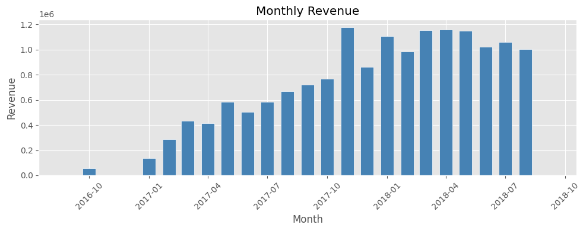
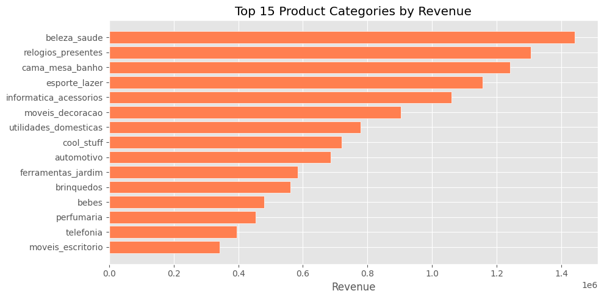
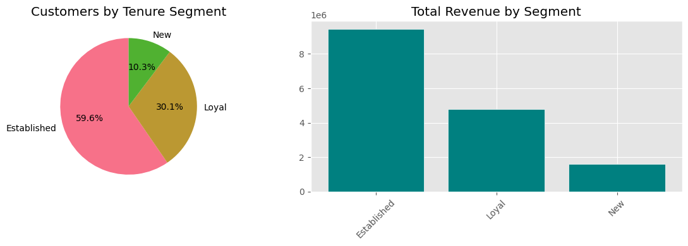

Olist E-Commerce Data Pipeline
From Raw Data to Business Insights
Data Engineering Project
Executive Summary
Problem: Reliable, timely analytics on e-commerce sales, customers, and operations.
Solution: End-to-end pipeline: ingest Olist data → PostgreSQL → star schema → quality checks → analysis.
- Single source of truth for revenue, orders, and customer value
- Trusted metrics: monthly trends, top categories, segments, delivery performance
- Foundation for BI and data science
Business Value
- Revenue: Top categories and high-CLV segments for targeted campaigns
- Operations: Late-delivery metrics to improve logistics and SLAs
- Strategy: Reusable pipeline for more data sources and markets
Data → Insights → Decisions
Architecture
Source CSVs → Python ingest → PostgreSQL (raw_olist) → dbt (staging dw_stg_olist → star schema dw_dw) → Quality (dbt + script) → Analysis (Python / BI).
Single pipeline from raw data to analysis-ready star schema.
Star Schema
- Fact: Order items (revenue, units, late delivery, first order)
- Dimensions: Customer, Product, Seller, Date
- Why: Fast, intuitive queries; easy to extend
Key Insights: Monthly Revenue
Strong growth from 2016 into 2017 (e.g. ~R$585k in peak months).

Key Insights: Top Categories
Top by revenue: beleza_saude, relogios_presentes, cama_mesa_banho, esporte_lazer, informatica_acessorios.

Key Insights: Revenue by Segment
Tenure segments (New, Established, Loyal) from dim_customer; total revenue and customer count per segment. Use notebook chart for current breakdown.

Key Insights: Late Delivery
6.6% of items late (7,265 vs 102,931 on-time); opportunity to improve SLAs.
These metrics are reproducible and validated by the pipeline.
Data Quality & Trust
- What we do: Automated checks after each run (dbt tests + custom checks on raw data).
- What we catch: Missing keys, invalid numbers, broken references.
- Message: Quality gates ensure we can trust the numbers we present.
Risks and Mitigations
- Data quality: Automated tests and alerts.
- Scaling: Same design can move to cloud warehouse (e.g. BigQuery) if needed.
- Operational: Optional orchestration (e.g. scheduled runs) for regular refreshes.
Next Steps / Recommendations
- Short term: Use current metrics for monthly business reviews; add one or two dashboards.
- Medium term: Schedule pipeline (e.g. weekly); add more dimensions (e.g. region) if data allows.
- Long term: Extend to other sources (e.g. marketing, returns) using the same pattern.